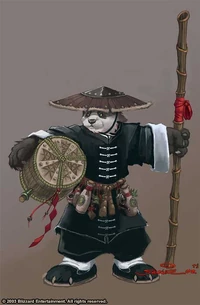
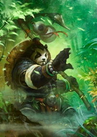
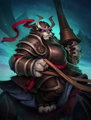

¿Qué son?
Los Pandaren, una raza única y enigmática dentro del vasto mundo de World of Warcraft, son criaturas humanoides de aspecto similar a los osos panda. Originarios de la mística isla de Pandaria, estos seres pacíficos han vivido durante siglos en armonía con la naturaleza. Su cultura se caracteriza por la filosofía de la moderación y el equilibrio, buscando siempre la paz y la sabiduría en medio de la tumultuosa lucha entre la Alianza y la Horda.
Los Pandaren son conocidos por su destreza en el arte de la guerra y su habilidad para canalizar la energía Chi en combate. Aunque han mantenido durante mucho tiempo su isla oculta del resto del mundo, se han unido a las facciones de la Alianza y la Horda en busca de un equilibrio aún mayor y para proteger Azeroth de amenazas mayores. Su capacidad para adaptarse a diversas clases y roles los convierte en aliados valiosos en la batalla, mientras que su amor por la buena comida y la bebida refleja su aprecio por las cosas simples de la vida.
Los Pandaren también se destacan por su conexión con los elementos naturales y su respeto por los ancestros. Su sociedad se rige por líderes sabios y ancianos que guían a su gente con la experiencia acumulada a lo largo de los siglos. A medida que los Pandaren exploran el mundo más allá de Pandaria, su presencia agrega una capa única de espiritualidad y equilibrio a las complejas dinámicas de la guerra y la paz en World of Warcraft.
Además de sus habilidades marciales y su filosofía de vida, los Pandaren también son conocidos por su maestría en el arte de la cerveza. Su destreza en la fabricación de esta popular bebida es venerada en todo Azeroth, y muchos aventureros buscan aprender sus técnicas en la creación de cervezas excepcionales. Los Pandaren han llevado consigo esta tradición a las ciudades de la Alianza y la Horda, compartiendo su pasión por la buena bebida y la camaradería. A través de sus tabernas y festivales, los Pandaren han logrado difundir su amor por la vida tranquila y el aprecio por las pequeñas alegrías, incluso en medio de la constante lucha entre las facciones. Su presencia no solo ha enriquecido la cultura de Azeroth, sino que también ha añadido un toque festivo y amistoso a los conflictos interminables que asolan el mundo.